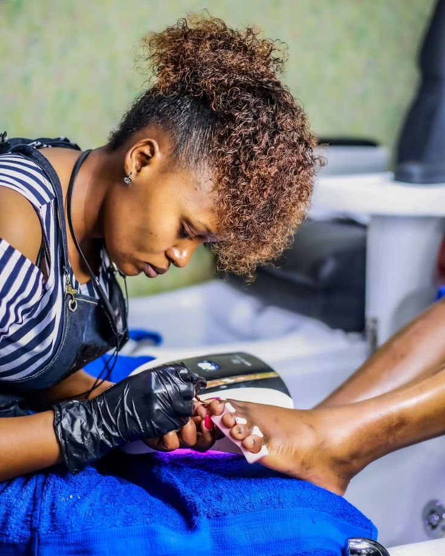
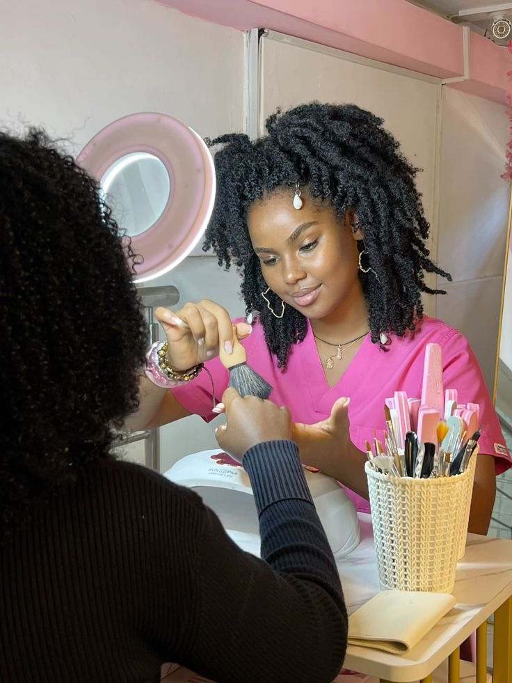

I
Natural Nail Health First
We never aggressively drill natural nail plates or pry off gel. Gentle soak-offs and keratin care keep nails resilient.
Zuri Nail Atelier began in 2022 when founder Wanjiku Kamau noticed how difficult it was to find a Nairobi nail studio that felt calm rather than chaotic, smelled of botanicals instead of harsh monomers, and left natural nails stronger after every removal.
Combining clean Japanese soft-gel chemistry with cold-pressed East African shea, baobab, and macadamia oils, we built a serene loft in Westlands anchored on slow precision, sterile tools, and genuine nail wellness.
“Luxury is not rushing. Luxury is taking the extra fifteen minutes to protect the living nail bed.”

Every product on our shelves and every minute of your appointment is anchored in these principles.
We never aggressively drill natural nail plates or pry off gel. Gentle soak-offs and keratin care keep nails resilient.
100% HEMA-free, TPO-free soft gels paired with sustainably sourced Kenyan shea, baobab, and rosehip oils.
Autoclave sterilization pouches opened in front of you, single-use files, and pipeless copper pedicure basins.
From vibrant conversation over Kenyan tea to complimentary "Quiet Chair" sessions, you set the pace of your visit.
Specialists in Russian dry cuticle technique, structured overlays, and editorial fine-line artistry.
10+ years of experience in natural nail rehabilitation and structured builder overlays. Known for sheer milky aesthetics and spotless cuticle work.

Master of Japanese soft-gel layering, Amina crafts delicate micro-French tips, coastal gold-leaf accents, aura gradients, and bespoke 3D art.

Specialist in ultra-thin Gel-X extensions and restorative Kenyan botanical pedicures. Passionate about foot reflexology and chrome finishes.
Whether it is your very first BIAB manicure or a monthly self-care ritual with friends, we would love to welcome you with a warm cup of Kenyan purple tea. Reserve your spot directly below or explore our full menu first.